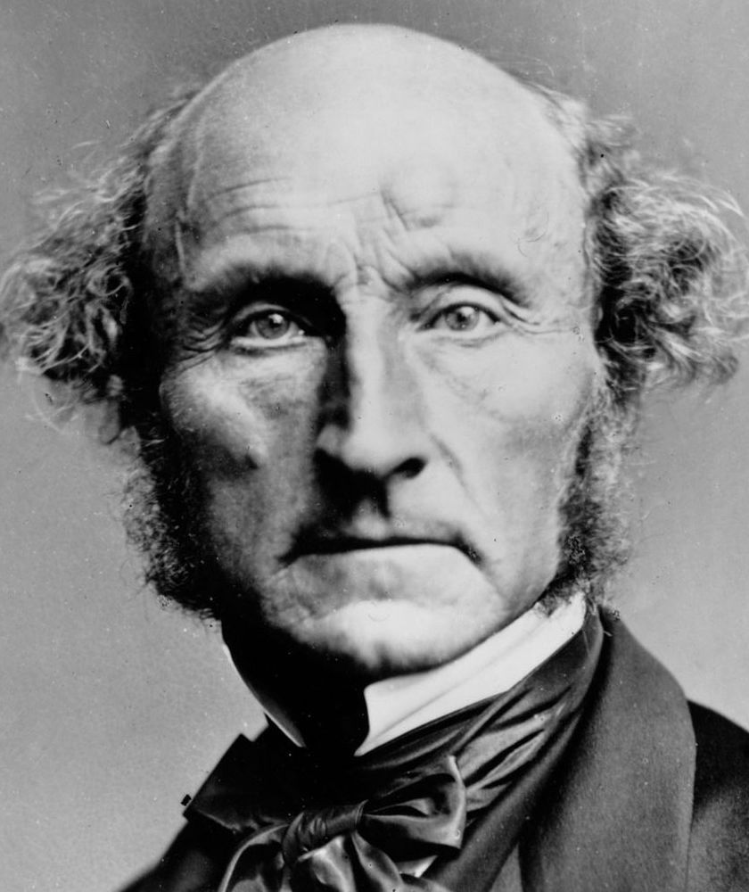
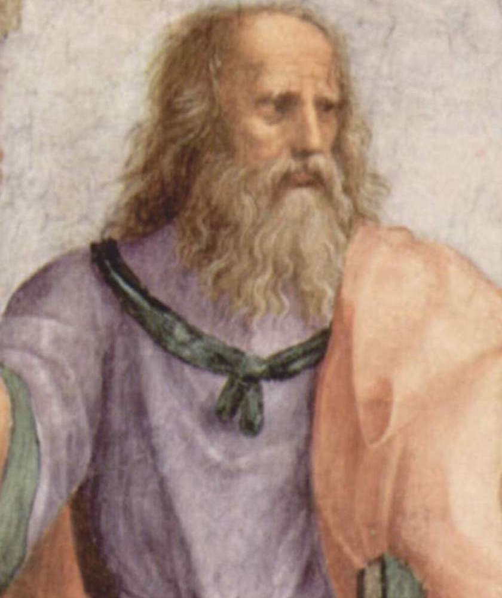

I love 😄 to learn about business 💡, to think ontologically 🤔 and to eat heaps of plants 🥕.
Martha NussbaumContemporary USAMartha Nussbaum is an American philosopher, legal scholar and classicist. She has written about feminism, animal rights and the ancient Greeks. Her first book, The Fragility of Goodness, tries to revive forgotten Greek thoughts about goodness and the meaning of life. She's literary, original and relevant. |
|
|  |
John Stuart MillVictorian BritainJS Mill was epic. He was raised to have a genius-level IQ and mastered Greek, Latin, physics and arithmetic by age 8. After the ensuing mental breakdown he found consolation in Romantic poetry, and enjoyed a secret affair with Mary Wollstonecraft. Together they co-authoured On Liberty and The Subjection of Women, two ferocious defences of political liberty and the right to independence. He is extremely relevant in contemporary debates about hate speech. |
|  |
PlatoAncient GreecePlato was the first 'proper' scholarly philosopher. After his beloved teacher Socrates was put to death by the Athenian government for being too intelligent, Plato took his revenge by immortalising Socrates through 'dialogues': combinations of plays and philosophical treatises. He wrote about knowledge, the good life and democratic participation. Alfred North Whitehead once wrote that all philosophy is just 'a series of footnotes to Plato' and he's not far wrong. |